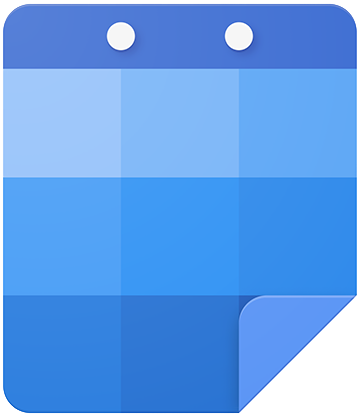

<mat-sidenav-container class="sidenav-container">
    <mat-sidenav #drawer class="sidenav" fixedInViewport [attr.role]="(isHandset$ | async) ? 'dialog' : 'navigation'" [mode]="(isHandset$ | async) ? 'over' : 'side'" [opened]="(isHandset$ | async) === false">
        <mat-toolbar style="display: block">
            <div style="display: flex; padding-top: 10px;" class="main-logo">
                
                <span class="logo-text">IVY</span>
            </div>
            <hr>
            <!-- <i class="fas fa-user-circle"></i> -->
            <div>
                <button mat-button mat-flat-button> Create </button>

            </div>
            <hr>
        </mat-toolbar>
        <mat-nav-list>
            <a mat-list-item routerLinkActive="active-link" routerLink="/">Dashboard</a>
            <a mat-list-item href="#">Link 2</a>
            <a mat-list-item href="#">Link 3</a>
        </mat-nav-list>
    </mat-sidenav>
    <mat-sidenav-content>
        <mat-toolbar color="primary">
            <!-- <button type="button" aria-label="Toggle sidenav" mat-icon-button (click)="drawer.toggle()" *ngIf="isHandset$ | async"> -->
            <button type="button" aria-label="Toggle sidenav" mat-icon-button (click)="drawer.toggle()">
        <mat-icon aria-label="Side nav toggle icon">menu</mat-icon>
      </button>
        </mat-toolbar>
        <!-- Add Content Here -->
        <app-main-dash>
            <ng-content></ng-content>
        </app-main-dash>


    </mat-sidenav-content>
</mat-sidenav-container>